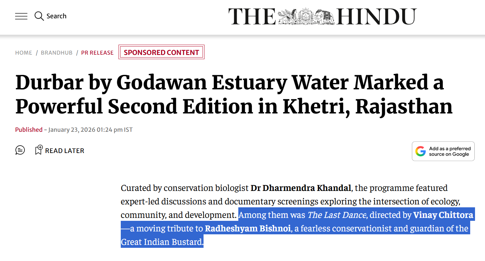
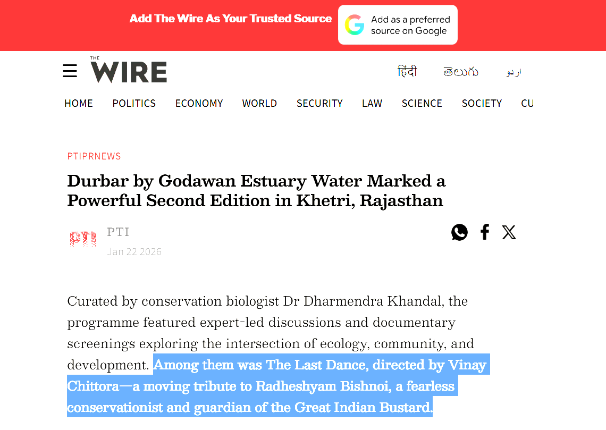
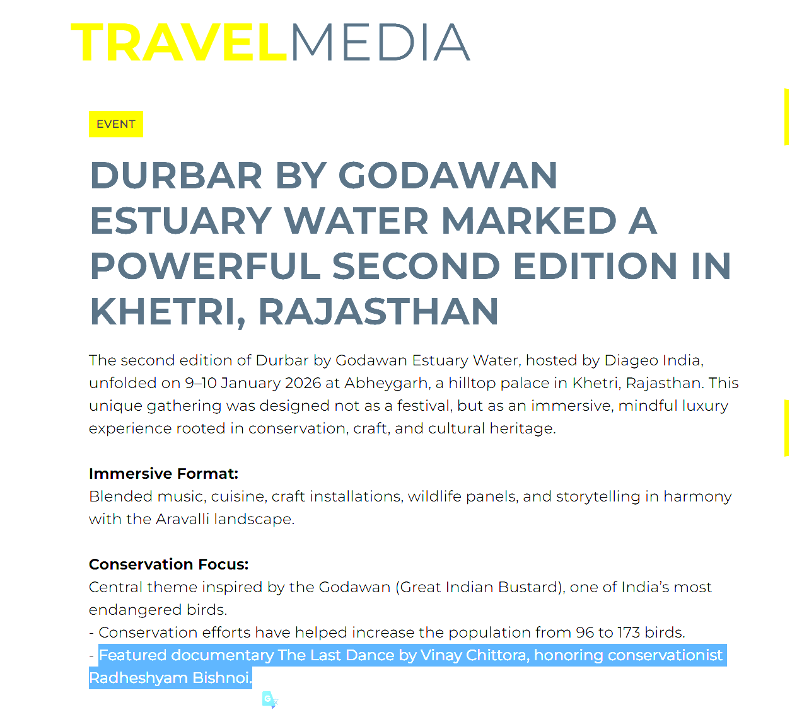
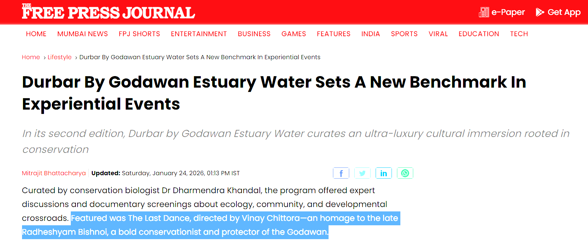

Durbar by Godawan Estuary Water: Second Edition in Khetri, Rajasthan
A BrandHub feature on Godawan Durbar’s Khetri edition, bringing together craft, culture, and conservation in Rajasthan.
I’m Vinay Chittora, a disabled wildlife photographer and aspiring filmmaker based in Rajasthan. I work across Mukundara Hills, grasslands, wetlands, and the Thar to create practical, field-led visual stories.
The cane is mobility support and a discipline: move slowly, read habitat carefully, and avoid unnecessary disturbance. The camera is my storytelling tool for Rajasthan wildlife photography and conservation films that are useful for public understanding.
I grew up around the Mukundara Hills landscape. That mix of scrub, forest edge, wetlands, and grasslands shaped how I track seasonality, behaviour, and habitat change. We also document field stories through mhtr.in to build stronger place-based awareness.
I use a customised vehicle setup with a window mount for stable long-lens work and minimal movement around animals. This lets me work quietly and safely while following forest department guidance and location protocols.
I’m building a long-term body of work across Wildlife, Documentaries, and conservation storytelling that supports ethical nature interpretation and future collaboration with researchers, NGOs, and editorial teams.
I take on editorial assignments, NGO collaborations, licensing, screenings, talks, and responsible nature-guide projects. If your brief needs reliable field execution and clear communication, let’s connect.
Selected features, interviews, and mentions.

A BrandHub feature on Godawan Durbar’s Khetri edition, bringing together craft, culture, and conservation in Rajasthan.

Coverage highlighting place-based programming and conservation dialogue in the Aravalli landscape.

Travel trade coverage of heritage, ecology, and storytelling-led event programming in Rajasthan.

A feature on conservation-rooted experiential programming and documentary storytelling.

Coverage of a collaboration between hospitality, conservation communication, and regional storytelling.

Event industry reporting on purpose-led field storytelling and immersive programming.

Industry coverage of conservation-led storytelling formats and strategic regional communication.

A report on event storytelling, destination narratives, and conservation-linked communication.

Coverage of brand storytelling that connects regional identity, ecology, and audience engagement.

Syndicated coverage highlighting conservation dialogue and place-led storytelling in Rajasthan.